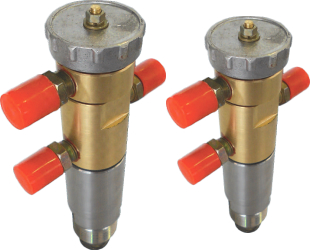
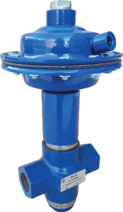

Регуляторы УРРД®
давления, перепада давления, расхода и перепуска
давления, перепада давления, расхода и перепуска
Назначение: Регуляторы УРРД® предназначены для автоматического поддержания постоянного давления, перепада давления, расхода и перепуска неагрессивных к материалам деталей регуляторов сред на вводах жилых,
общественных, промышленных зданий, объектах теплоснабжения, водоснабжения, насосных станциях,
тепловых пунктах и других технологических объектах.
Регуляторы УРРД® также могут быть использованы как исполнительные устройства, управляемые пилотными устройствами РД-3М, ПТ-1-1 и другими гидравлическими регуляторами.
Регуляторы УРРД®
выпускаются в следующих комплектациях:
выпускаются в следующих комплектациях:
- УРРД-НО-РД - Регулятор давления «После себя» Применяется для поддержания давления рабочей среды в заданном диапазоне на участке или в контуре системы, расположенной после регулятора.
- УРРД-НЗ-РД - Регулятор давления «До себя» Применяется для поддержания давления рабочей среды в заданном диапазоне на участке или в контуре системы, расположенной до регулятора.
- УРРД-НО-РПД - Регулятор перепада давления Применяется для поддержания постоянного перепада давления (между подающим и обратным трубопроводами).
- УРРД-НО-РР - Регулятор расхода Применяется для поддержания постоянного расхода (с использованием диафрагмы).
- УРРД-НЗ-РП - Регулятор перепуска Применяется для поддержания постоянного давления в трубопроводе на регуляторе.
-
Исполнение клапана - НОНЗ- «нормально открытое»- «нормально закрытое»
Принцип работы:
Принцип действия регулятора основан на уравновешивании силы, создаваемой давлением или разностью давлений регулируемой среды на чувствительный элемент - мембрану, силой упругой деформации пружины сжатия. Возникшее при этом усилие на мембране через шток передается на затвор. Заданное значение регулируемого параметра (давления, перепада давления, расхода) определяется усилием настроечной пружины. При отклонении параметра от заданного значения равновесие сил, действующих на мембрану, нарушается, что приводит к перемещению затвора в нужную сторону и поддержанию регулируемой величины в заданных пределах. При перемещении затвора изменяется площадь сечения проходного отверстия и, соответственно, давление (перепад давления, расход) регулируемой среды, проходящей через регулятор.
Клапаны регулирующие фланцевые с электрическими приводами
Клапаны регулирующие РК и запорно-регулирующие ЗРК
с электрическим исполнительным механизмом
(ЭИМ) являются исполнительными устройствами, предназначенными для автоматического регулирования
расхода неагрессивных к материалам деталей клапана сред в системах теплоснабжения, горячего и холодного
водоснабжения, вентиляции и других технологических системах. Кроме того, регулирующие клапаны РК применяются для регулирования расхода насыщенного и перегретого пара. Представленная в каталоге номенклатура регулирующих клапанов включает в себя проходные односедельные клапаны с условным проходом DN15-200мм и двухседельные клапаны с условным проходом DN100-150мм. В зависимости от значения условного прохода предусмотрено исполнение клапанов, разгруженных по давлению, это необходимо для увеличения допустимого перепада давлений на клапане.
Регуляторы температуры прямого действия РТПД
Регулирующий клапан в сочетании с приводом прямого действия
(термостатом) является регулятором температуры прямого действия (РТПД) и предназначается для применения преимущественно в системах горячего водоснабжения (ГВС) со скоростными и емкостными водонагревателями и с баками-аккумуляторами, для регулирования температуры в системах
индивидуального и центрального теплоснабжения, охлаждения,
кондиционирования, а также в промышленных исудовых системах. Он также может использоваться в смесительных узлах систем напольного отопления. Термостат закрывает клапан, когда температура превышает установленное значение. Установка регулятора возможна как на подающем, так и на обратном трубопроводе тепловой сети.
Устройство - Регулятор температуры прямого действия состоит из регулирующего клапана разгруженного по давлению (кроме Ду15) и привода прямого действия (термостата). Термостат – это единая неразборная система состоящая из датчика, капилляра и настроечного цилиндра.
Принцип работы:
Требуемая температура теплоносителя устанавливается на настроечном цилиндре привода. Изменение температуры рабочей среды внутри датчика вызывает увеличение или уменьшение ее объема и давления, которые передаются по капиллярной трубке на поршень термоэлемента. Поршень, перемещаясь, приводит в движение связанный с ним плунжер клапана. При увеличении температуры регулируемой среды клапан закрывается, при уменьшении — открывается.
Преимущества
- • Не требует применения сложных систем автоматизация.
- • Работает без посторонних источников энергии.
- • Прост в обслуживании и настройке.
Клапаны питания котлов КРП-50М, КРП-50Мэ, КРП-50Мд
Клапаны питания котлов предназначены для автоматического питания и поддержания заданного уровня воды в верхнем барабане котла малой производительности, а также в других аналогичных системах.
Принцип действия клапана основан на изменении площади сечения проходного отверстия, соответственно, и расхода воды, поступающей через клапан в котел, в зависимости от перемещения затвора. При снижении уровня воды в барабане котла исполнительный механизм передает импульс на рычаг, приводя шток в движения открывая или закрывая затвор.
Принцип действия клапана основан на изменении площади сечения проходного отверстия, соответственно, и расхода воды, поступающей через клапан в котел, в зависимости от перемещения затвора. При снижении уровня воды в барабане котла исполнительный механизм передает импульс на рычаг, приводя шток в движения открывая или закрывая затвор.
Регуляторы давления РД-3М

РД-3М применяются для регулирования давления, расхода, уровня и перепада давлений жидких неагрессивных к материалам деталей регулятора сред на объектах теплоснабжения, водоснабжения, насосных станциях, ЦТП и других технологических объектах. Регуляторы РД-3М являются управляющими (пилотными) устройствами и предназначены для работы в комплекте с исполнительными (гидравлическими клапанами и регуляторами) устройствами. В комплекте с исполнительными устройствами, регуляторы РД-3М предназначены также для выполнения функции защиты (рассечки тепловых сетей на гидравлически изолированные зоны) при аварийном нарушении гидравлических режимов.
Регуляторы выпускаются в двух исполнениях
1с - односильфонная конструкция Применяется для поддержания постоянного давления
3с - трехсильфонная конструкция Для поддержания постоянного перепада давления.
Регуляторы выпускаются в двух исполнениях
1с - односильфонная конструкция Применяется для поддержания постоянного давления
3с - трехсильфонная конструкция Для поддержания постоянного перепада давления.
Положение и способ монтажа:
Регулятор устанавливается в вертикальном положении, прикрепляется к стене или стойке вблизи от исполнительного устройства с учетом удобства обслуживания и наименьшей длины соединительных линий. В точке отбора импульсов на трубопроводе объекта регулирования, а также в точках забора и возврата рабочей среды, должна устанавливаться запорная арматура (запорный вентиль, кран шаровый и др.). Монтаж прибора производится над исполнительным устройством, но не выше 1 метра.
Преимущества
- • работает без каких-либо посторонних источников энергии
- • имеет широкий диапазон настройки (0,01 - 1,6 МПа)
- • обеспечивает точность работы и повышенную чувствительность регулирующих клапанов больших диаметров условного прохода.
Преобразователи температуры ПТ-1-1

Назначение
Преобразователи температуры ПТ-1-1 являются управляющими устройствами гидравлических регуляторов и регулирующих клапанов (УРРД®, РК, ИК-25 и др.) и предназначены для поддержания заданного температурного режима систем теплоснабжения, горячего водоснабжения и других технологичесих систем.
Преобразователи температуры ПТ-1-1 являются управляющими устройствами гидравлических регуляторов и регулирующих клапанов (УРРД®, РК, ИК-25 и др.) и предназначены для поддержания заданного температурного режима систем теплоснабжения, горячего водоснабжения и других технологичесих систем.
Принцип работы:
Принцип работы ПТ-1-1 заключается в перенаправлении потока
рабочей среды, проходящей через корпус преобразователя, для
подачи или сброса управляющего давления в рабочей камере
гидравлического привода исполнительного устройства (УРРД®, РК, ИК-25 и др.). Перенаправление потока рабочей среды происходит за счет перемещения затвора, который открывает и закрывает соответствующие проходные отверстия преобразователя. Движение затвору передается от штока термобаллона - термочувствительного элемента, преобразующего изменение температуры регулируемой среды в поступательное движение штока.
Клапаны импульсные ИК-251

Клапаны ИК-25 могут применяться в качестве исполнительных и
вспомогательных устройств, управляемых приборами РД-3М, ПТ-1-1 и их аналогами. В качестве исполнительных устройств ИК-25 применяются для регулирования давления, расхода, уровня или температуры жидких неагрессивных к материалам деталей клапана сред, а также используются как разделительные и смесительные трехходовые устройства при автоматизации систем теплоснабжения, водоснабжения и других технологических процессов. В качестве вспомогательных устройств ИК-25 применяются для ускорения срабатывания исполнительных устройств (регулирующих клапанов больших диаметров условного прохода) при регулировании
заданных параметров и автоматической защите (рассечке тепловых сетей на гидравлически изолированные зоны) на насосных станциях, ЦТП и других технологических объектах.